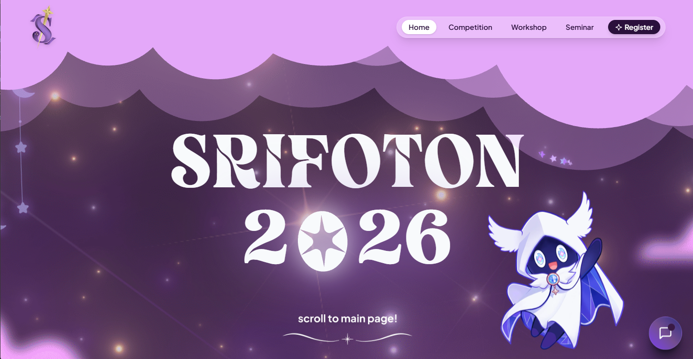
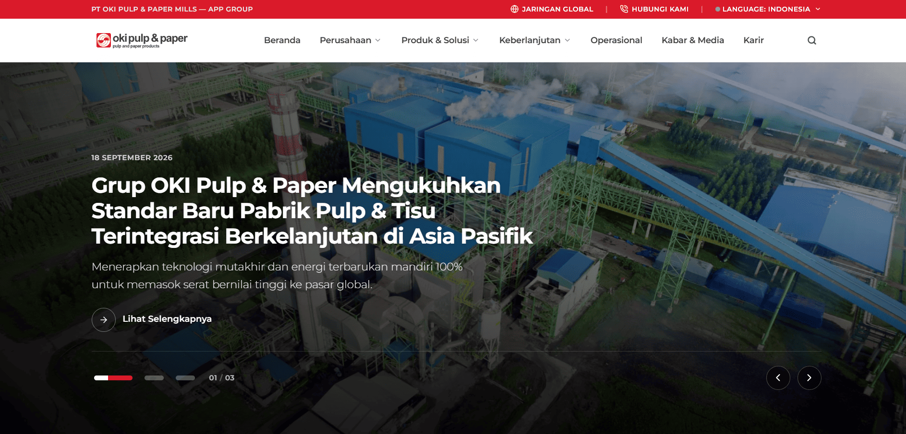
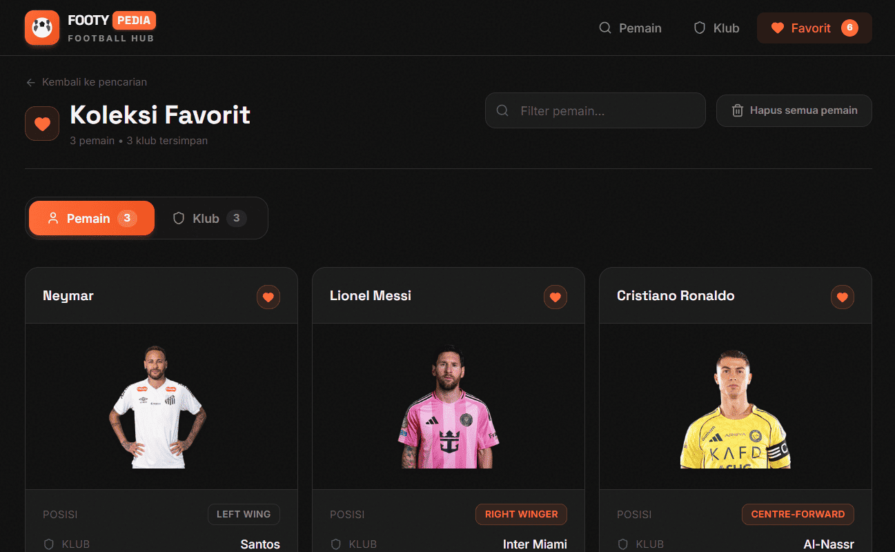
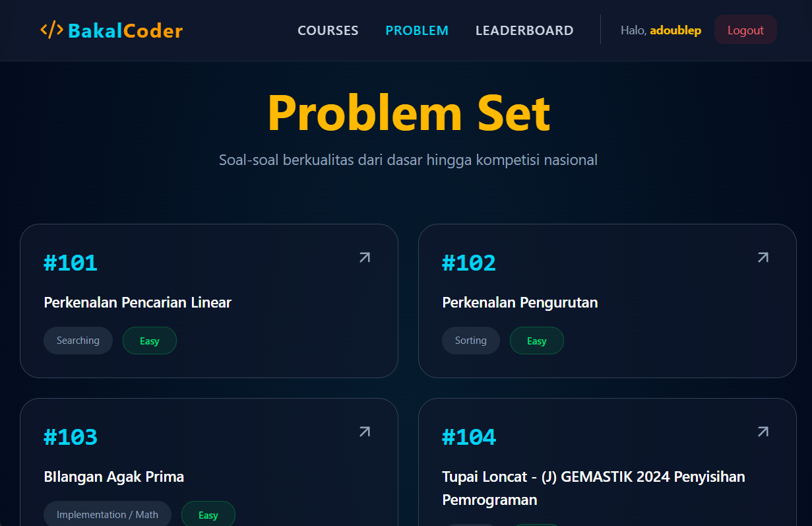

01SRIFOTON 2026
Official website for SRIFOTON (Sriwijaya Informatic Exhibition), a national annual informatics exhibition and competition by HMIF Unsri.
A selection of web experiences built with a focus on clear interfaces, responsive layouts, and practical solutions.
04 SELECTED PROJECTS
From event platforms to content-driven websites, each project is an opportunity to turn an idea into a polished digital experience.

01Official website for SRIFOTON (Sriwijaya Informatic Exhibition), a national annual informatics exhibition and competition by HMIF Unsri.

02A corporate web concept that makes company information easy to explore through a structured visual layout. Not part of PT OKI Pulp & Paper.

03An interactive React-based football data platform powered by TheSportsDB API for exploring and bookmarking player and club statistics.

04An approachable learning platform concept that helps aspiring developers discover and follow coding resources.
 Private
Private